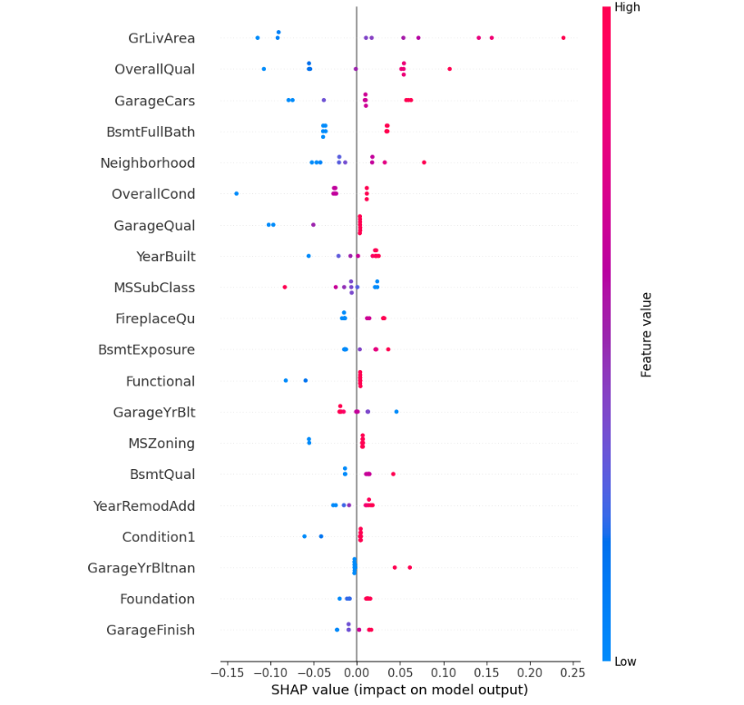

專案背景
在這個專案中，使用了多種機器學習算法來預測房價，包括 Simple Regression、Random Forest 和 XGBoost。最終，我們利用 DNN 進一步提升預測的準確性。
數據集介紹
使用的數據集的特徵有 84 個，1460 筆樣本，主要可以分成 7 類:
特徵類別:
- 1. 基本特徵: Id
- 2. 地理與土地相關特徵: 房屋的總土地面積（平方英尺）
- 3. 房屋結構與建造特徵: 建造年份
- 4. 內部特徵: 地面以上的居住面積（平方英尺）
- 5. 房屋外部: ExterQual: 外牆材料的質量評分
- 6. 附加設施: 游泳池面積（平方英尺）
- 7. 銷售相關: SaleCondition: 銷售條件（如 Normal 表示正常銷售）
- 8. 社區和周邊: 房屋周邊條件 1（如 Prox 表示靠近主幹道）
預測(Prediction):
SalePrice
模型評估
最終以DNN(深度神經網路)勝出，為了增加解釋性，使用 Shap method 提供更多訊息。以結果來說，影響房價最大的有:
正相關:
- 附加設施大小(游泳池面積)、內部空間大小(地上居住面積)等；
-
負相關:
- 主要是沒有浴室(BsmtFullBath)，因為它的Y軸(重要性)很上面，且X軸(shap value)很集中在左側，並且左側都藍色、右側都紅色，可見有無浴室對價格影響大；雖然鄰居(Neighbor)、總體條件(OverallCond)、車庫品質(GarageQual)也集中在左側，但較為分散。

Summary Plot
如果我們想討論一些特徵之間的關聯，比如: 用新舊產品、評價與促銷，預測銷售量，可能不好用線性回歸解釋，因為新的產品跟舊的不能相提並論，反而用KNN去找新產品與哪個舊產品最相似，這會比較合理；相似度的演算法也可以使用隨機森林和XGB這種樹方法；在樣本大、特徵多的情況，XGB或DNN+shap value更適合。
結論
透過這個專案，我們展示了如何結合多種機器學習技術來解決房價預測的問題，並提高了模型的解釋能力。